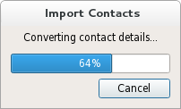

QProgressDialog Class
The QProgressDialog class provides feedback on the progress of a slow operation. More...
| Header: | #include <QProgressDialog> |
| CMake: | find_package(Qt6 REQUIRED COMPONENTS Widgets) target_link_libraries(mytarget PRIVATE Qt6::Widgets) |
| qmake: | QT += widgets |
| Inherits: | QDialog |
- List of all members, including inherited members
- QProgressDialog is part of Standard Dialogs.
Properties
|
Public Functions
| QProgressDialog(QWidget *parent = nullptr, Qt::WindowFlags f = Qt::WindowFlags()) | |
| QProgressDialog(const QString &labelText, const QString &cancelButtonText, int minimum, int maximum, QWidget *parent = nullptr, Qt::WindowFlags f = Qt::WindowFlags()) | |
| virtual | ~QProgressDialog() |
| bool | autoClose() const |
| bool | autoReset() const |
| QString | labelText() const |
| int | maximum() const |
| int | minimum() const |
| int | minimumDuration() const |
| void | open(QObject *receiver, const char *member) |
| void | setAutoClose(bool close) |
| void | setAutoReset(bool reset) |
| void | setBar(QProgressBar *bar) |
| void | setCancelButton(QPushButton *cancelButton) |
| void | setLabel(QLabel *label) |
| int | value() const |
| bool | wasCanceled() const |
Reimplemented Public Functions
| virtual QSize | sizeHint() const override |
Public Slots
| void | cancel() |
| void | reset() |
| void | setCancelButtonText(const QString &cancelButtonText) |
| void | setLabelText(const QString &text) |
| void | setMaximum(int maximum) |
| void | setMinimum(int minimum) |
| void | setMinimumDuration(int ms) |
| void | setRange(int minimum, int maximum) |
| void | setValue(int progress) |
Signals
| void | canceled() |
Reimplemented Protected Functions
| virtual void | changeEvent(QEvent *ev) override |
| virtual void | closeEvent(QCloseEvent *e) override |
| virtual void | resizeEvent(QResizeEvent *event) override |
| virtual void | showEvent(QShowEvent *e) override |
Protected Slots
| void | forceShow() |
Detailed Description
A progress dialog is used to give the user an indication of how long an operation is going to take, and to demonstrate that the application has not frozen. It can also give the user an opportunity to abort the operation.
A common problem with progress dialogs is that it is difficult to know when to use them; operations take different amounts of time on different hardware. QProgressDialog offers a solution to this problem: it estimates the time the operation will take (based on time for steps), and only shows itself if that estimate is beyond minimumDuration() (4 seconds by default).
Use setMinimum() and setMaximum() or the constructor to set the number of "steps" in the operation and call setValue() as the operation progresses. The number of steps can be chosen arbitrarily. It can be the number of files copied, the number of bytes received, the number of iterations through the main loop of your algorithm, or some other suitable unit. Progress starts at the value set by setMinimum(), and the progress dialog shows that the operation has finished when you call setValue() with the value set by setMaximum() as its argument.
The dialog automatically resets and hides itself at the end of the operation. Use setAutoReset() and setAutoClose() to change this behavior. Note that if you set a new maximum (using setMaximum() or setRange()) that equals your current value(), the dialog will not close regardless.
There are two ways of using QProgressDialog: modal and modeless.
Compared to a modeless QProgressDialog, a modal QProgressDialog is simpler to use for the programmer. Do the operation in a loop, call setValue() at intervals, and check for cancellation with wasCanceled(). For example:
QProgressDialog progress("Copying files...", "Abort Copy", 0, numFiles, this);
progress.setWindowModality(Qt::WindowModal);
for (int i = 0; i < numFiles; i++) {
progress.setValue(i);
if (progress.wasCanceled())
break;
//... copy one file
}
progress.setValue(numFiles);
A modeless progress dialog is suitable for operations that take place in the background, where the user is able to interact with the application. Such operations are typically based on QTimer (or QObject::timerEvent()) or QSocketNotifier; or performed in a separate thread. A QProgressBar in the status bar of your main window is often an alternative to a modeless progress dialog.
You need to have an event loop to be running, connect the canceled() signal to a slot that stops the operation, and call setValue() at intervals. For example:
// Operation constructor Operation::Operation(QObject *parent) : QObject(parent), steps(0) { pd = new QProgressDialog("Operation in progress.", "Cancel", 0, 100); connect(pd, &QProgressDialog::canceled, this, &Operation::cancel); t = new QTimer(this); connect(t, &QTimer::timeout, this, &Operation::perform); t->start(0); } void Operation::perform() { pd->setValue(steps); //... perform one percent of the operation steps++; if (steps > pd->maximum()) t->stop(); } void Operation::cancel() { t->stop(); //... cleanup }
In both modes the progress dialog may be customized by replacing the child widgets with custom widgets by using setLabel(), setBar(), and setCancelButton(). The functions setLabelText() and setCancelButtonText() set the texts shown.

See also QDialog and QProgressBar.
Property Documentation
autoClose : bool
This property holds whether the dialog gets hidden by reset()
The default is true.
Access functions:
| bool | autoClose() const |
| void | setAutoClose(bool close) |
See also setAutoReset().
autoReset : bool
This property holds whether the progress dialog calls reset() as soon as value() equals maximum()
The default is true.
Access functions:
| bool | autoReset() const |
| void | setAutoReset(bool reset) |
See also setAutoClose().
labelText : QString
This property holds the label's text
The default text is an empty string.
Access functions:
| QString | labelText() const |
| void | setLabelText(const QString &text) |
maximum : int
This property holds the highest value represented by the progress bar
The default is 100.
Access functions:
| int | maximum() const |
| void | setMaximum(int maximum) |
See also minimum and setRange().
minimum : int
This property holds the lowest value represented by the progress bar
The default is 0.
Access functions:
| int | minimum() const |
| void | setMinimum(int minimum) |
See also maximum and setRange().
minimumDuration : int
This property holds the time that must pass before the dialog appears
If the expected duration of the task is less than the minimumDuration, the dialog will not appear at all. This prevents the dialog popping up for tasks that are quickly over. For tasks that are expected to exceed the minimumDuration, the dialog will pop up after the minimumDuration time or as soon as any progress is set.
If set to 0, the dialog is always shown as soon as any progress is set. The default is 4000 milliseconds.
Access functions:
| int | minimumDuration() const |
| void | setMinimumDuration(int ms) |
value : int
This property holds the current amount of progress made.
For the progress dialog to work as expected, you should initially set this property to QProgressDialog::minimum() and finally set it to QProgressDialog::maximum(); you can call setValue() any number of times in-between.
Warning: If the progress dialog is modal (see QProgressDialog::QProgressDialog()), setValue() calls QCoreApplication::processEvents(), so take care that this does not cause undesirable re-entrancy in your code. For example, don't use a QProgressDialog inside a paintEvent()!
Access functions:
| int | value() const |
| void | setValue(int progress) |
[read-only] wasCanceled : const bool
This property holds whether the dialog was canceled
Access functions:
| bool | wasCanceled() const |
Member Function Documentation
[explicit] QProgressDialog::QProgressDialog(QWidget *parent = nullptr, Qt::WindowFlags f = Qt::WindowFlags())
Constructs a progress dialog.
Default settings:
- The label text is empty.
- The cancel button text is (translated) "Cancel".
- minimum is 0;
- maximum is 100
The parent argument is dialog's parent widget. The widget flags, f, are passed to the QDialog::QDialog() constructor.
See also setLabelText(), setCancelButtonText(), setCancelButton(), setMinimum(), and setMaximum().
QProgressDialog::QProgressDialog(const QString &labelText, const QString &cancelButtonText, int minimum, int maximum, QWidget *parent = nullptr, Qt::WindowFlags f = Qt::WindowFlags())
Constructs a progress dialog.
The labelText is the text used to remind the user what is progressing.
The cancelButtonText is the text to display on the cancel button. If QString() is passed then no cancel button is shown.
The minimum and maximum is the number of steps in the operation for which this progress dialog shows progress. For example, if the operation is to examine 50 files, this value minimum value would be 0, and the maximum would be 50. Before examining the first file, call setValue(0). As each file is processed call setValue(1), setValue(2), etc., finally calling setValue(50) after examining the last file.
The parent argument is the dialog's parent widget. The parent, parent, and widget flags, f, are passed to the QDialog::QDialog() constructor.
See also setLabelText(), setLabel(), setCancelButtonText(), setCancelButton(), setMinimum(), and setMaximum().
[virtual noexcept] QProgressDialog::~QProgressDialog()
Destroys the progress dialog.
[slot] void QProgressDialog::cancel()
Resets the progress dialog. wasCanceled() becomes true until the progress dialog is reset. The progress dialog becomes hidden.
[signal] void QProgressDialog::canceled()
This signal is emitted when the cancel button is clicked. It is connected to the cancel() slot by default.
See also wasCanceled().
[override virtual protected] void QProgressDialog::changeEvent(QEvent *ev)
Reimplements: QWidget::changeEvent(QEvent *event).
[override virtual protected] void QProgressDialog::closeEvent(QCloseEvent *e)
Reimplements: QDialog::closeEvent(QCloseEvent *e).
[protected slot] void QProgressDialog::forceShow()
Shows the dialog if it is still hidden after the algorithm has been started and minimumDuration milliseconds have passed.
See also setMinimumDuration().
void QProgressDialog::open(QObject *receiver, const char *member)
Opens the dialog and connects its canceled() signal to the slot specified by receiver and member.
The signal will be disconnected from the slot when the dialog is closed.
[slot] void QProgressDialog::reset()
Resets the progress dialog. The progress dialog becomes hidden if autoClose() is true.
See also setAutoClose() and setAutoReset().
[override virtual protected] void QProgressDialog::resizeEvent(QResizeEvent *event)
Reimplements: QDialog::resizeEvent(QResizeEvent *).
void QProgressDialog::setBar(QProgressBar *bar)
Sets the progress bar widget to bar. The progress dialog resizes to fit. The progress dialog takes ownership of the progress bar which will be deleted when necessary, so do not use a progress bar allocated on the stack.
void QProgressDialog::setCancelButton(QPushButton *cancelButton)
Sets the cancel button to the push button, cancelButton. The progress dialog takes ownership of this button which will be deleted when necessary, so do not pass the address of an object that is on the stack, i.e. use new() to create the button. If nullptr is passed, no cancel button will be shown.
See also setCancelButtonText().
[slot] void QProgressDialog::setCancelButtonText(const QString &cancelButtonText)
Sets the cancel button's text to cancelButtonText. If the text is set to QString() then it will cause the cancel button to be hidden and deleted.
See also setCancelButton().
void QProgressDialog::setLabel(QLabel *label)
Sets the label to label. The progress dialog resizes to fit. The label becomes owned by the progress dialog and will be deleted when necessary, so do not pass the address of an object on the stack.
See also setLabelText().
[slot] void QProgressDialog::setRange(int minimum, int maximum)
Sets the progress dialog's minimum and maximum values to minimum and maximum, respectively.
If maximum is smaller than minimum, minimum becomes the only legal value.
If the current value falls outside the new range, the progress dialog is reset with reset().
[override virtual protected] void QProgressDialog::showEvent(QShowEvent *e)
Reimplements: QDialog::showEvent(QShowEvent *event).
[override virtual] QSize QProgressDialog::sizeHint() const
Reimplements: QDialog::sizeHint() const.
Returns a size that fits the contents of the progress dialog. The progress dialog resizes itself as required, so you should not need to call this yourself.